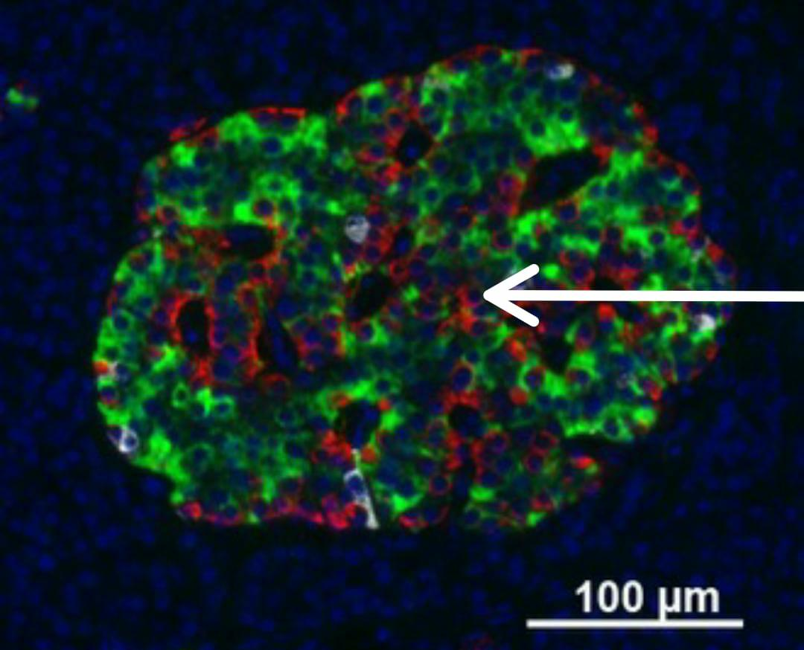

/Histology-Guide-001.jpg)
Glándula Pituitaria (Hipófisis)
📌 Abreviaciones:
🔬 IMAGEN 1 (CON ETIQUETA) - Hipófisis:
- PD: Pars Distalis
- PI: Pars Intermedia
- PN: Pars Nervosa
- QR: Quistes de Rathke
🔬 IMAGEN 2 (CON ETIQUETA) - Hipófisis parte anterior (Adenohipófisis):
- 🔹 Células acidófilas: Señaladas con las flechas negras.
- 🔹 Células basófilas: Señaladas con las flechas amarillas.
- 🔹 Células cromófobas: Señaladas con las flechas azules.
🔬 IMAGEN 3 (CON ETIQUETA) - Hipófisis parte posterior (Neurohipófisis):
- 🔹 Cuerpos de Herring: Señalados con la flecha.
- 🔹 Pituicitos: Señalados con las flechas amarillas.
- 🔹 Fibras nerviosas: Señaladas con las flechas azules.
📌 Estructura de la Hipófisis:
- 🔹 Se encuentra en la base del encéfalo, dentro de la silla turca del hueso esfenoides.
- 🔹 Conectada al hipotálamo por el infundíbulo.
- 🔹 Peso: Aproximadamente 0.5 g en adultos.
📌 División estructural:
- Adenohipófisis (Lóbulo anterior): Deriva del ectodermo oral (bolsa de Rathke).
- Neurohipófisis (Lóbulo posterior): Deriva del neuroectodermo (extensión del hipotálamo).
- Lóbulo intermedio: Poco desarrollado en humanos.
📌 Función de la Adenohipófisis:
Produce y secreta hormonas que regulan el crecimiento, metabolismo y reproducción.
📌 Función de la Neurohipófisis:
Almacena y libera hormonas producidas por el hipotálamo.
🔬 Hormonas principales:
- Oxitocina: Contracciones uterinas y eyección de leche.
- ADH (Vasopresina): Reabsorción de agua en los riñones.
🔬 Componentes celulares:
- Pituicitos: Células gliales de soporte.
- Axones no mielinizados: Procedentes de neuronas hipotalámicas.
- Cuerpos de Herring: Acumulaciones de neurosecreciones en los axones.

Glándula Pineal
📌 Abreviaciones:
- P: Pinealocitos
- VS: Vasos sanguíneos
- A: Arenilla pineal
📌 Tinción:
Hematoxilina y Eosina (H.E.)
📌 Tipo de glándula:
Endocrina y neuroendocrina
📌 Forma y Tamaño:
- 🔹 Forma: Similar a una piña.
- 🔹 Tamaño: 5 a 8 mm de largo.
📌 Ubicación:
En el epitalamio, cerca del centro del cerebro, entre los colículos superiores.
📌 Estructura General:
🔬 Cápsula:
- 🔹 Formada por piamadre.
- 🔹 Envía tabiques internos, dividiendo la glándula en lóbulos o cordones.
🔬 Estroma:
- 🔹 Tejido conectivo derivado de la piamadre.
- 🔹 Contiene fibras colágenas y elásticas, vasos sanguíneos y fibras nerviosas.
🔬 Parénquima:
- 🔹 Tipo de tejido: Neuroendocrino.
- 🔹 Organización en cordones celulares alrededor de capilares.
📌 Población Celular Principal:
🔬 Pinealocitos (95% de las células):
- 🔹 Función: Síntesis y secreción de melatonina.
- 🔹 Organización: En cordones celulares alrededor de capilares.
🔬 Subtipos de pinealocitos:
- 🔹 Tipo 1: Forma ovalada o redonda, citoplasma claro, núcleos grandes.
🔹 Más abundantes, activos con estímulos de oscuridad.
- 🔹 Tipo 2: Citoplasma más denso y teñido más intensamente.
🔹 Menos numerosos, también producen melatonina.
🔬 Células intersticiales:
- 🔹 Similar a astrocitos.
- 🔹 Núcleos alargados y densos.
- 🔹 Función: Soporte estructural y regulación del entorno celular.
📌 Función Principal:
- 🔹 Producción de **melatonina**, hormona que regula el ritmo circadiano y el ciclo sueño-vigilia.
- 🔹 Su secreción aumenta en la oscuridad y disminuye con la luz.

Glándula Tiroides
📌 Abreviaciones:
- FT: Folículo Tiroideo
- CF: Células Foliculares (tirocitos)
- C: Coloide del Folículo tiroideo
- TC: Tejido Conectivo
- CP: Células Parafoliculares
- VS: Vasos sanguíneos
📌 Tinción:
Hematoxilina y Eosina (H.E.)
📌 Tipo de Glándula:
Endocrina
📌 Forma y Ubicación:
- 🔹 Forma: No definida.
- 🔹 Ubicación: Rodeada de tejido endocrino y una cápsula de tejido.
📌 Funciones Principales:
- 🔹 Transcripción genética.
- 🔹 Incremento del metabolismo.
- 🔹 Control de calcio en el organismo.
- 🔹 Regulación de procesos mentales.
📌 Estructura General:
🔬 Folículo Tiroideo:
- 🔹 Produce, almacena y secreta las hormonas tiroideas **T3** y **T4**.
🔬 Coloide:
- 🔹 Almacena las células foliculares.
🔬 Tejido Conectivo:
- 🔹 Brinda soporte a los folículos y almacena hormonas tiroideas.
📌 Células Principales:
🔬 Células Foliculares:
- 🔹 Producen **calcitonina**.
- 🔹 Se derivan de la cresta neural.
🔬 Vasos Sanguíneos:
- 🔹 Contienen eritrocitos.
- 🔹 Transportan las hormonas **T3** y **T4** a través del cuerpo.

Glándula Paratiroides
📌 Abreviaciones:
- A: Adipocito
- CO: Células oxífilas
- CF: Células principales
- TC: Tejido conectivo
- CP: Células principales
- A: Adipocitos
📌 Descripción:
Son cuatro pequeñas glándulas endocrinas ubicadas en el cuello, cerca de la glándula tiroides. Su función principal es la producción de **hormona paratiroidea (PTH)**, crucial para la regulación del calcio en el organismo.
📌 Características:
- 🔹 Organizada en **cordones celulares** característicos.
- 🔹 Rodeada por **tejido adiposo**, que contiene adipocitos uniloculares mezclados con células glandulares.
📌 Tipos de células:
🔬 Células principales:
- 🔹 Sintetizan y secretan **PTH**, la hormona encargada de la regulación del calcio.
🔬 Células oxífilas:
- 🔹 No secretan PTH.
- 🔹 Su número aumenta con la edad y se agrupan en **nódulos**.

Páncreas
📌 Abreviaciones:
- IL: Islote de Langerhans
- PE: Páncreas Exocrino
- CI: Conducto Interlobulillar
📌 Tinción:
Hematoxilina y Eosina (H.E.)
📌 Tipo de Glándula:
Glándula mixta: **endocrina** (1–2%) y **exocrina** (95–98%)
📌 Forma y Tamaño (porción endocrina):
- 🔹 **Forma:** Aglomerados redondeados u ovales (**islotes de Langerhans**).
- 🔹 **Tamaño:** Variable; más grandes y abundantes en la cola del páncreas.
📌 Ubicación:
Dispersos entre los **acinos pancreáticos** (porción exocrina).
📌 Estructura General:
🔬 Estroma:
- 🔹 **Tejido conectivo laxo**.
- 🔹 Contiene una **rica red de capilares fenestrados**.
🔬 Organización:
- 🔹 **Islotes de Langerhans:** Grupos celulares de citoplasma claro y menos basofílico que las células acinares.
📌 Parénquima:
- 🔹 **Tipo de tejido:** Endocrino, organizado en **cordones celulares** rodeados por capilares.

Inmunohistoquímica
📌 Población Celular Principal:
🔬 Células Alfa (α):
- 🔹 15–20% de las células del islote pancreático.
- 🔹 **Ubicación:** Periferia del islote.
- 🔹 **Núcleo:** Redondo, ligeramente excéntrico.
- 🔹 **Citoplasma:** Contiene gránulos ricos en **glucagón**.
- 🔹 **Función:** Secretan **glucagón**, aumentando la glucosa en sangre mediante **glucogenólisis** y **gluconeogénesis**.
🖼️ Imagen de inmunofluorescencia:
Islote pancreático donde se observan células alfa en rojo.
🔬 Células Beta (β):
- 🔹 60–75% de las células de los islotes.
- 🔹 **Ubicación:** Centro del islote, más frecuentes en la cola del páncreas.
- 🔹 **Núcleo:** Redondo, central, cromatina laxa.
- 🔹 **Citoplasma:** Contiene gránulos con **insulina**.
- 🔹 **Función:** Secretan **insulina**, que disminuye la glucosa en sangre promoviendo su captación y almacenamiento como glucógeno.
🖼️ Imagen de inmunofluorescencia:
Islote pancreático con células beta íntegras (rojo), células beta destruidas (verde) y núcleos (azul).

Glándula Suprarrenal
📌 Abreviaciones:
🔬 IMAGEN 1 - Corteza Suprarrenal:
- ZG: Zona Glomerulosa
- T: Trabéculas Fibrosas
- ZF: Zona Fasciculada
- ZR: Zona Reticular
- CFC: Cápsula Fibrocolágena
- CE: Células Espongiocitos
🔬 IMAGEN 2 - Médula Suprarrenal:
- ZR: Zona Reticular
- M: Médula Suprarrenal
- V: Canales Venosos
📌 Estructura de la Glándula Suprarrenal:
🔬 Corteza Suprarrenal:
La corteza se divide en **tres zonas concéntricas**, cada una con funciones específicas:
- Zona Glomerulosa:
🔹 Capa más externa, con células organizadas en rosetas o glomérulos.
🔹 **Función:** Secreta **mineralocorticoides**, regulando el equilibrio de sodio y potasio.
- Zona Fasciculada:
🔹 Capa prominente con células grandes y abundante citoplasma.
🔹 **Función:** Produce **glucocorticoides**, que participan en el metabolismo del azúcar y la respuesta al estrés.
- Zona Reticular:
🔹 Capa más interna con células pequeñas organizadas en cordones irregulares.
🔹 **Función:** Secreta **andrógenos suprarrenales**, como la **dehidroepiandrosterona**.
🔬 Médula Suprarrenal:
En estas micrografías teñidas con **Hematoxilina y Eosina (H.E.)**, se puede observar:
- 🔹 Células organizadas en cordones rodeados por redes de sinusoides.
- 🔹 Altamente vascularizada, con **canales venosos prominentes** para rápida liberación hormonal.
📌 Población Celular Principal:
🔬 Células Cromafines:
- 🔹 Células neuroendocrinas especializadas.
- 🔹 Citoplasma ligeramente granular.
- 🔹 Secretan catecolaminas:
🔹 **Adrenalina (epinefrina):** 80%
🔹 **Noradrenalina (norepinefrina):** 20%.
- 🔹 **Función:** Se liberan en respuesta al estrés agudo (**respuesta de “lucha o huida”**).
🔬 Células Ganglionares:
- 🔹 Neuronas simpáticas que inervan vasos o regulan secreción.
- 🔹 Núcleos grandes y redondos.
- 🔹 **Función:** Pueden formar sinapsis con fibras nerviosas preganglionares.
📌 Función Principal:
- 🔹 Producción de **catecolaminas** (adrenalina y noradrenalina) que:
- 🔹 Aumentan la frecuencia cardíaca y la presión arterial.
- 🔹 Dilatan los bronquios.
- 🔹 Movilizan glucosa para responder rápidamente al estrés.
📌 Conclusión
A partir de la elaboración de este trabajo, pudimos comprender que el sistema endocrino es fundamental para el funcionamiento, adaptación y equilibrio del cuerpo humano.
Regula procesos vitales como el crecimiento, el metabolismo y la reproducción mediante la producción de hormonas.
Estudiar las glándulas y su composición celular es esencial para entender cómo trabajan de manera coordinada dentro del eje hipotálamo-hipófisis.
Además, el sistema endocrino tiene relevancia no solo biológica sino también clínica, facilitando el entendimiento de patologías y tratamientos.
La creación de esta página web como guía interactiva fortaleció lo aprendido y brindó un recurso accesible para otros estudiantes, promoviendo un enfoque dinámico y visual en el estudio de la histología endocrina.